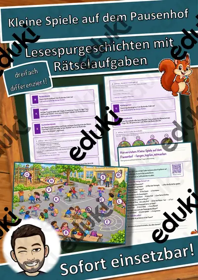
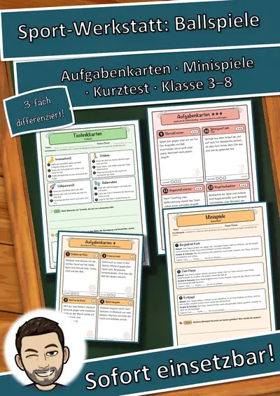

Lesespur: Ballspiele: rollen, prellen, werfen, fangen – Lesespurgeschichte mit Rätseln (Klasse 1)
Ballspiele – rollen, prellen, werfen, fangen – Lesespurgeschichte Sport (Klasse 1/2)Begib dich mit deiner Klasse auf eine bunte Lesespur durch die Sporthalle! Luis und Greta machen eine Ballspiel-Rallye: An der Ballkiste entdecken sie große und kleine, harte und weiche Bälle – sogar einen Igelball. Auf der Rollbahn rollen sie sich den Ball zu, auf der Prellstrecke lernen sie das Prellen mit den Fingern, an der Zielwand zielen sie auf bunte Kreise, in der Fangecke machen die Hände ein Körbchen. An der Kegelbahn purzeln die Kegel, auf dem Schnurfeld wird „Ball über die Schnur“ gespielt – und im Abschlusskreis darf jedes Kind einmal in den Korb werfen. Ihr Stoff-Hund Kuller ist immer dabei. Am Ende jedes Abschnitts verrät ein Hinweis den nächsten Ort auf dem Plan – nur wer genau liest, findet den Weg und sammelt alle geheimen Buchstaben zum Lösungswort.
Die perfekte Lesespur für den SPORTUNTERRICHT der 1. und 2. Klasse – ideal als Einstieg in eine Ballspiel-Einheit: Sie verbindet erstes sinnentnehmendes Lesen mit den Grundfertigkeiten Rollen, Prellen, Werfen, Zielen und Fangen. Das Material ist SOFORT EINSETZBAR und in DREI DIFFERENZIERUNGSSTUFEN (leicht ★ / mittel ★★ / schwer ★★★) angelegt.WICHTIG: Das komplette Material ist sowohl in FARBE als auch in SCHWARZ-WEISS enthalten – ideal zum Sparen von Druckkosten.DAS IST ENTHALTEN
- Lesespurgeschichte in 3 Niveaus (leicht, mittel, schwer)
- farbiger Hallenplan als Suchkarte
- Hörverstehen mit QR-Code zur MP3 (selbstständiges Hören mit Kopfhörern)
- vier Aufträge auf dem Weg: ein Quiz, eine Zuordnung, eine Rechenaufgabe und ein Steckbrief
- Rätselseite (Wörter-Suchsel + Fragen)
- Ausmalbild zum Thema (Kinder mit Bällen)
- ausführliches Lösungsblatt für die Lehrkraft
- alles zusätzlich als komplette Schwarz-Weiß-VarianteSO GEHT DIE LESESPURDie Kinder lesen ab START, finden im Text den nächsten Ort, suchen ihn auf dem Plan und lesen bei dieser Station weiter. An jeder richtigen Station gibt es einen Buchstaben. Eingebaute Sackgassen (Geräteraum, Kletterwand, Sprossenwand, Mattenwagen) sind keine Stationen und dienen der Selbstkontrolle. Am Ende werden die gesammelten Buchstaben umgestellt und ergeben ein geheimes Lösungswort. (Die Lösungen sind selbstverständlich nur im Lösungsblatt für die Lehrkraft enthalten.)INHALTLICHER SCHWERPUNKTDie Kinder lernen verschiedene Bälle kennen und üben die Grundfertigkeiten Rollen, Prellen, Werfen, Zielen und Fangen in einfachen Spielformen wie Kegeln und „Ball über die Schnur“.ABGEDECKTER LEHRPLAN (Klasse 1/2, Sport)
- Sport (LehrplanPLUS Bayern) – Jahrgangsstufe 1/2 „Spielen und Spiel“: Bälle kennenlernen, Grundfertigkeiten mit dem Ball üben, einfache Ballspiele spielen und aufeinander achten.
- Deutsch – Lesen: Texten gezielt Informationen entnehmen; Zuhören: einem Sachhörtext folgen (Hörverstehen mit MP3).
- Mathematik – Addition und Subtraktion im Zahlenraum bis 20, einfache Multiplikation.
- Fächerübergreifend / Kompetenzen: soziales Lernen (Rücksicht, Regeln), Feinmotorik und Auge-Hand-Koordination, genaues Lesen und Prüfen, kreatives Gestalten (Ausmalbild).
Geeignet für Freiarbeit, Stationenlernen, Vertretungsstunden, Wochenplan, Projekttage und Distanzunterricht. Klassenstufe 1/2.
Ähnliche Materialien

Lesespur: Spiele aus aller Welt: hüpfen, werfen, fangen wie anderswo – Lesespurgeschichte mit Rätseln (Klasse 3)

Lesespur: Kleine Spiele auf dem Pausenhof: fangen, hüpfen, mitmachen – Lesespurgeschichte mit Rätseln (Klasse 1)

Ball Lückentext mit Wortspeicher Hörverstehen und Suchsel

Sport-Werkstatt Paket Ballspiele: 4 Sportarten in 3 Stufen (Klasse 3–8)

Lesespur: Fang- und Laufspiele: flitzen, ausweichen, abklatschen – Lesespurgeschichte mit Rätseln (Klasse 1)

Lesespur: Die Bundesjugendspiele: laufen, springen, werfen – Lesespurgeschichte mit Rätseln (Klasse 3)

Lesespur: Werfen: Schlagball, Weitwurf und Zielwurf – Lesespurgeschichte mit Rätseln (Klasse 3)